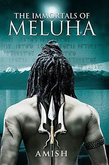
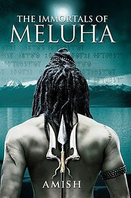
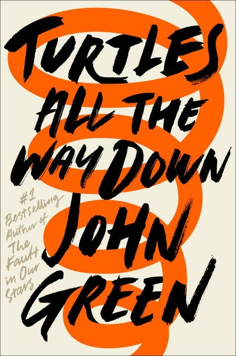
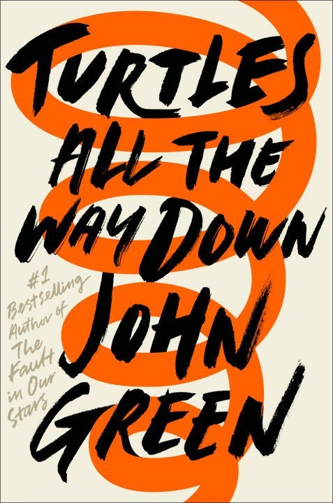

📚 Smruthi's Reading Corner
Hi! Welcome to my reading corner where I take you on a journey on my love for books — from where it began to how is it going now. Flip to begin!
reading clipart PNG Designed By 58pic from pngtree
Hi! Welcome to my reading corner where I take you on a journey on my love for books — from where it began to how is it going now. Flip to begin!
reading clipart PNG Designed By 58pic from pngtree
As a kid I was obsessed with mystery novel series like The Famous Five, Nancy Drew and The Hardy Boys. I would be excited for my trip to the library to get my hands on a new case waiting to be solved by these kids.
As I moved to high school I got more into fantasy series like The Chronicles of Narnia, The Percy Jackson & the Olympians, The Hunger Games, Harry Potter and The Shiva Trilogy. I did continue to read some mystery thrillers like the Dan Brown novels.
 


My reading kind of slowed down while I was in college but I remember reading a bit of YA especially John Green. I ventured into reading memoirs my absolute favourite being Becoming by Michelle Obama. I also discovered another favourite author of mine - Frederik Backman.
 


I have found more time to read in grad school. So here are some of my favourites across different genres I have read over the past two years.
You have two options for this - press the red button if you want my top recs across different categories/themes or press the blue button if you want to try something new and get recommendations based of lines I liked in a book. Most of my recommendations are from the past two years as I have started diligently tracking my reading recently.
I track all my reading on the Fable app. So you can check out my reading lists here.